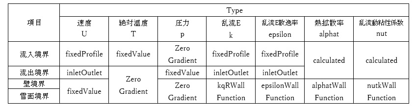
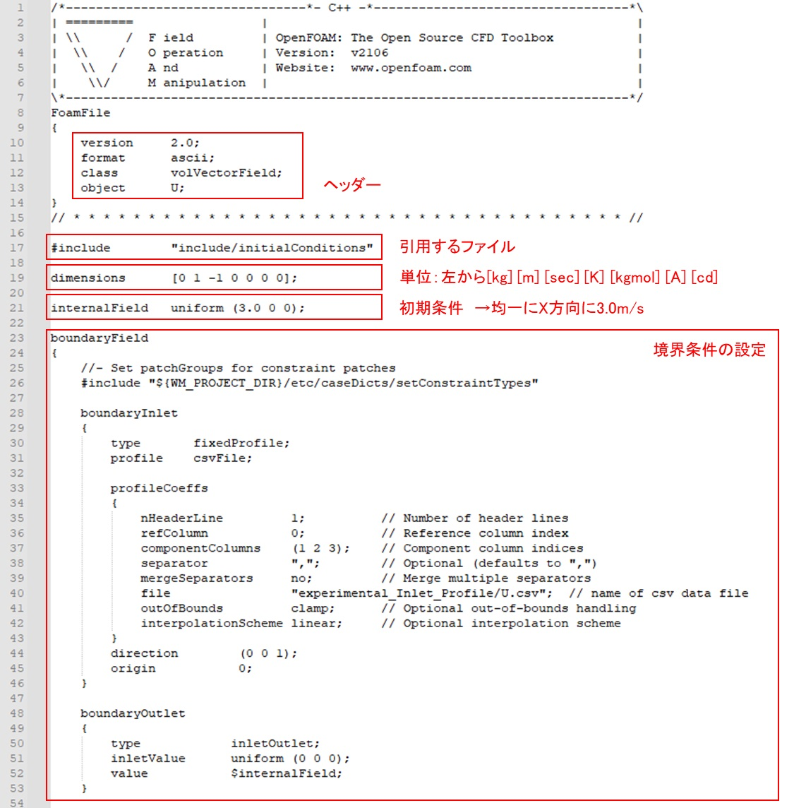
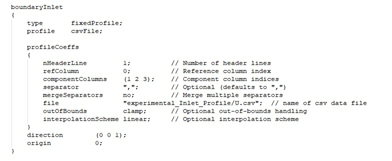
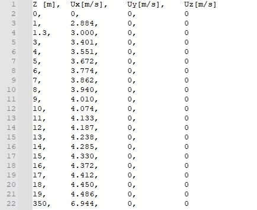

(4) 流入境界条件
(a) 概要
境界条件は「../CASE/0」ディレクトリにある、物理量毎のファイルを書き換えることで設定できます。
風雪シミュレーションでは、第1段階の気流解析と、第2段階の風雪解析のパートに分かれているため、「../CASE/0.orig_steady」と「../CASE/0.orig_transient」で設定するようにしています。計算を実行すると、新たに作成される「../CASE/0」にこれらのフォルダがコピーされるようになっています。
(b) 境界条件の物理量のType（steady）
境界面ごとに境界条件を設定することができます。通常は下記のように境界面ごとに物理量のTypeを設定してくださ い。

■Typeの意味
fixedProfile：外部ファイルの読み込み
inletOutlet：自由流出
fixedValue：一定値
ZeroGradient：ゼロ勾配条件
Calculated：内部計算値
○○WallFunction：壁関数
具体的な設定条件については、以下のサイト等を参照してください。
（参考サイト：PENGUINITIS）
https://ss1.xrea.com/penguinitis.g1.xrea.com/study/OpenFOAM/bc_settings.html
物理量毎のファイルは以下のような構成となっています。なお、境界面の名前は任意となっていますので、メッシュ作成時と同じ名前としてください。

■速度U：流入境界（外部ファイルを読み込む場合）について
速度の流入境界は、下図の「file」に示された位置にある外部ファイルを読み込みます。

外部ファイルは、鉛直方向の距離と、3方向の速度が設定できます。数値は「カンマ」で区切ることで、数値を分けることができます。
